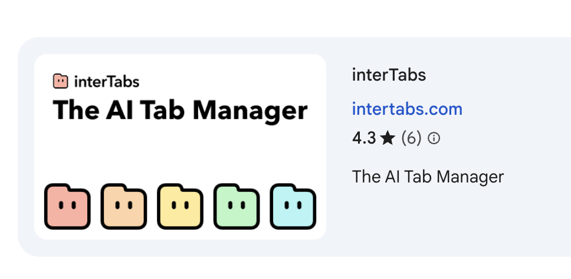
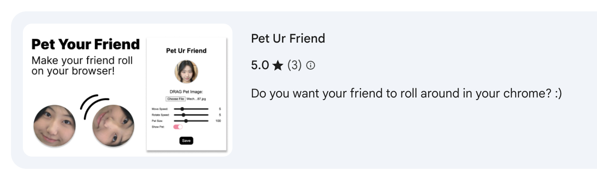

Artist? Designer? Developer? Or...
Here is my creative journey 🤔
Drawing
I started with drawing at middle school!


But I soon realized that I was so tallented in it because I am not the kind of artistic expression person (also that I don't know how to use visual art to express my thoughts and feelings. i dont know what to draw rather than just imitating).
Design
I turned my focus to design and to explore new medias.
However, I realized that just designing will not give me the feeling that I am creating an IMPACT (which is a large part of what i want to achieve). Thus, in IMA I've got in touch to all different media resources and more coding.
Interactive Media & Programming
View some of my projectsWhile I aim for create projects that is useful(?) but I also enjoy creating some funny things.
 However, the emergence of AI made me doupt again. (aghhh i am so bad in focusing on one thing... but I am still exploring :)
NOW & FUTURE
Now, while I am still not sure what exactly, but I do hope to use technology as a skill to designa and create things or artistical things to make the world a better place.
🐟 Back 🐟